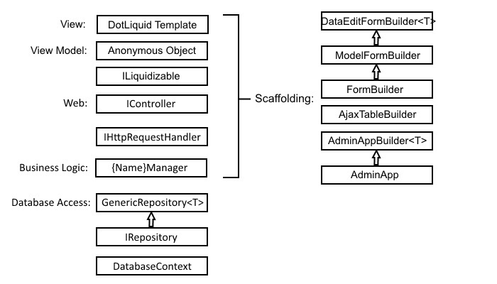

ZKWeb框架文档
ZKWeb是一个用于快速开发网站的框架。
提供了编辑即编译，和全自动管理数据库结构的功能。
模板系统和自动生成组件参考了Django的做法，并遵从Don't repeat yourself原则。
框架更注重功能的分离而不是层次的分离，
每个插件程序集可以包含功能所需要的业务处理，数据库处理，控制器和模板。
插件系统可以实现相同的业务代码提供给不同的客户时，只需要写一次并只管理一份代码。
框架和插件编写时均考虑了实现可视化编辑（可视化编辑功能目前还没有开始编写）。
项目地址
https://github.com/zkweb-framework/ZKWeb https://github.com/zkweb-framework/ZKWeb.Plugins
DEMO
地址: http://www.zkwebsite.com
用户名: demo
密码: 123456
索引文档
最终更新: 2016-06-08
ZKWeb索引文档
ZKWeb.Plugins索引文档
主要功能
- 支持动态载入和编辑的插件系统
- 使用Csscript + Codedom
- 编辑后自动重新编译
- 支持从代码自动更新数据库
- 使用NHibernate
- 添加数据表或字段后不需要运行任何命令，刷新浏览器即可更新到数据库
- 使用简单和高性能的Ioc容器
- 支持数据库事件
- 允许添加回调，在数据修改或删除前后在同一个事务中进行操作
- 支持对比修改前后的数据
- Django风格的模板系统
- 使用DotLiquid
- 支持模板重载
- 支持手机版专用模板（优先从templates.mobile读取模板内容）
- 支持区域和针对区域的动态内容，可以在这基础上实现可视化编辑
- 支持对页面中的部分内容进行单独缓存，可以大幅提升页面的响应速度
- 多语言支持
- 在一个插件中翻译好的内容另外一个插件不需要翻译
- 翻译接口支持自定义翻译逻辑（允许智能翻译）
- 可以检测并使用浏览器语言或Cookies指定的语言
- 多时区支持
- 可以检测并使用Cookies指定的时区
- 自动生成表单（需要Common.Base插件）
- 支持从类型的成员自动生成表单
- 支持客户端和服务端的表单验证
- 支持防跨站攻击验证，默认开启
- 支持自定义复杂的表单类型
- 支持在其他插件中扩展现有的表单
- 管理员后台（需要使用Common.Admin插件）
- 基于AdminLTE
- 同时支持电脑和手机，所有页面自适应
- 自动生成增删查改（需要使用Common.Admin插件）
- 允许生成管理员使用的增删查改页面
- 支持批量操作和高级搜索
- 支持回收站
- 支持自动生成和检查权限
- 不通过代码生成器，减少程序的代码量和内存占用
层次结构
当前核心 + 默认插件的层次结构如下

性能数据
- 2016-05-27 (i7 Q720 1.6Ghz x 4 core, ab -n 2000 -c 8, vmware player 12)
- 首页 2.240ms, 2.165ms, 2.123ms
- 商品列表页 2.131ms, 2.013ms, 2.132ms
- 商品详情页 2.165ms, 2.136ms, 2.193ms
项目进度
核心框架已开发完毕，但仍处于测试阶段。 正在逐步完善业务插件，目标是发布一个完整的商城网站。
讨论QQ群：522083886。